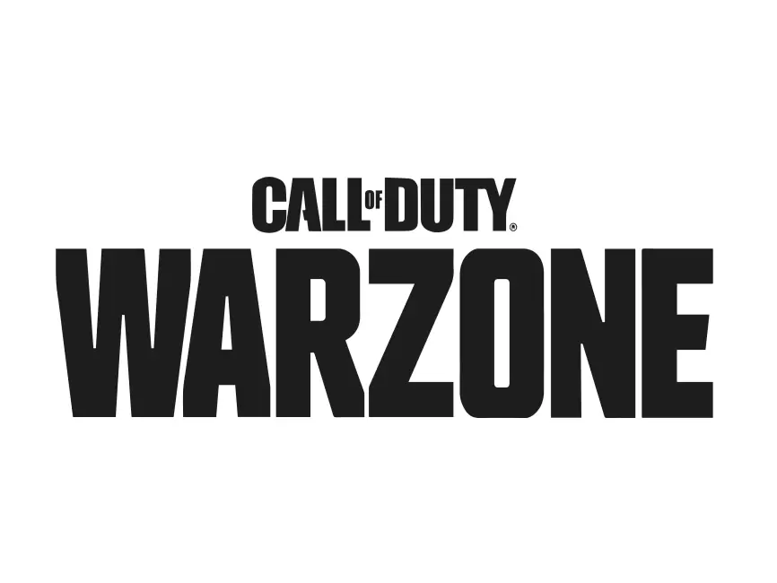

Os jogos FPS (ou First-Person Shooters, em inglês) são exatamente o que o nome descreve: jogos em que a visão do personagem é em primeira pessoa e a mesma do jogador, para maior imersão. Títulos do gênero são geralmente focados em tiro, ação com armas de fogo ou brancas para combate corpo a corpo, com algumas variações.

Duas equipes de cinco jogam uma contra a outra, e os jogadores assumem o papel de "agentes" com habilidades únicas. No modo de jogo principal, a equipe atacante tem uma bomba, chamada Spike, que eles precisam plantar em um local. Se a equipe atacante proteger com sucesso a bomba e ela detonar, eles ganharão um ponto. Se a equipe defensora desarmar com sucesso a bomba ou o cronômetro de 100 segundos da rodada expirar, a equipe defensora receberá um ponto. Eliminar todos os membros da equipe adversária também ganha uma rodada. A primeira equipe a vencer o melhor de 24 rodadas vence a partida.[3] O jogo também promove um servidor com tick rate de 128, que garante uma jogabilidade suave e baixo ping com uma expansão global de data centers.

é um jogo eletrônico free-to-play do gênero battle royale desenvolvido pela Infinity Ward e Raven Software e publicado pela Activision.[1] Lançado em 10 de março de 2020 para Microsoft Windows, PlayStation 4 e Xbox One, o jogo faz parte do título Call of Duty: Modern Warfare (2019), mas não requer compra. Warzone permite um combate em um modo multijogador on-line entre 150 jogadores na cidade fictícia de Verdansk, que é vagamente baseada na cidade de Donetsk, no leste da Ucrânia.[2] Ele apresenta uma progressão de plataforma-cruzada entre os dois jogos. Lançamento

Fortnite foi revelado pela primeira vez pela Epic Games em 2011, considerado uma combinação de Minecraft e Left 4 Dead, pois quatro jogadores trabalhariam juntos para buscar recursos para construir fortificações, armadilhas, armas e outros objetos para sobreviver a ataques de monstros.